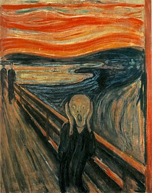
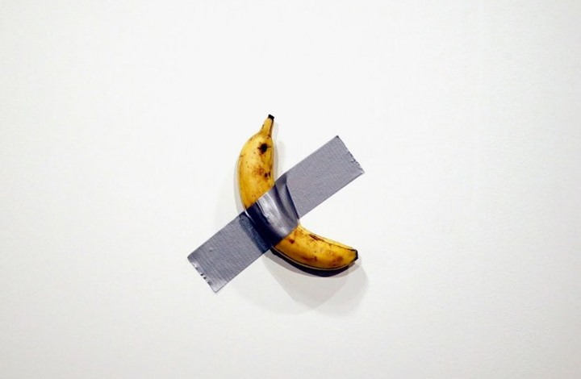

ما هو الفن و ما اهميته؟
يعتقد الكثير أنّ الفنون لا معنى لها ولا أهميّة، ولكن أنتَ لا تعرف أنّ الفنّانين يُعَبّرون عن مشاعرهم تجاه مجتمعهم والطبيعة وما تظهره الحياة لهم مِن خلال استخدام وسيلةٍ فنيّة؛ فعلى سبيل المثال عندما نشاهدُ لوحةٌ فنيّة أو قِطعَة مُوسيقيّة فهي تُحرّر الفنان مِن الحالة التي يعيشُ فيها سواء كان الخوف، أو القلق، أو الغضب، أو أي مشاعر مكبوتةٌ في داخله يُخرجها لكي تقودهُ بعد ذلك إلى الاستقرار النفسي، لأنّ كبتِ المشاعر والأحاسيس لفتراتٍ طويلة تُسَبب الكثير مِن العُقَد النفسيّة، لذلك سنقومُ بالتعرّفِ مِن خلال موقع موضوع على أهميّة الفنون وكيف تستخدمها لنفسك حتّى ولو لم تكن فناناً.
>
فن الرسم
يُعرف الرسم على أنّه فن مرئي وتشكيلي يتم فيه التعبير عن الأحاسيس والأفكار والأشياء والمواضيع بوساطة الأشكال، والخطوط، والألون، وهو فن عُرف منذ القدم، ويكون على عدة أشكال بتسجيل لبعض الملاحظات أو الخواطر أو المشاهد لشكل معين في لحظة ما، أو على شكل عمل تحضيري لوسيلة ما من وسائل وأساليب التعبير الفني، لكنه يكون في بعض الأحيان عملاً فنياً قائماً بذاته
انقر على الصور لمعرفة لمزيد عنها

